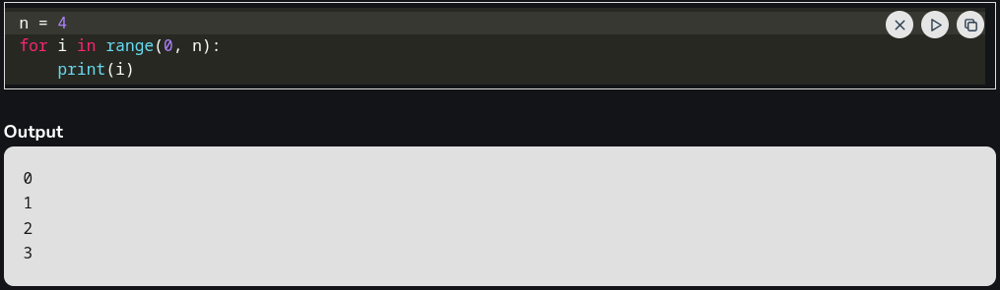
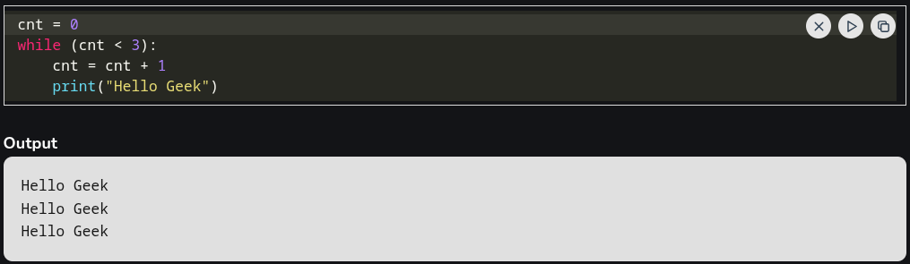

Looping in Python
Loops in Python are used to repeat actions efficiently. The main types are For loops (counting through items) and While loops (based on conditions). There are 2 kinds of loop in python: For Loop and While Loop.
For Loop
For loops is used to iterate over a sequence such as a list, tuple, string or range. It allow to execute a block of code repeatedly, once for each item in the sequence.
Explanation: This code prints the numbers from 0 to 3 (inclusive) using a for loop that iterates over a range from 0 to n-1 (where n = 4).
While Loop
In Python, a while loop is used to execute a block of statements repeatedly until a given condition is satisfied. When the condition becomes false, the line immediately after the loop in the program is executed.
In below code, loop runs as long as the condition cnt < 3 is true. It increments the counter by 1 on each iteration and prints "Hello Geek" three times.
There is a special case in While Loop called infinite loop. Infinite Loop can be achieved using "while (True)".
Source: Geeksforgeeks